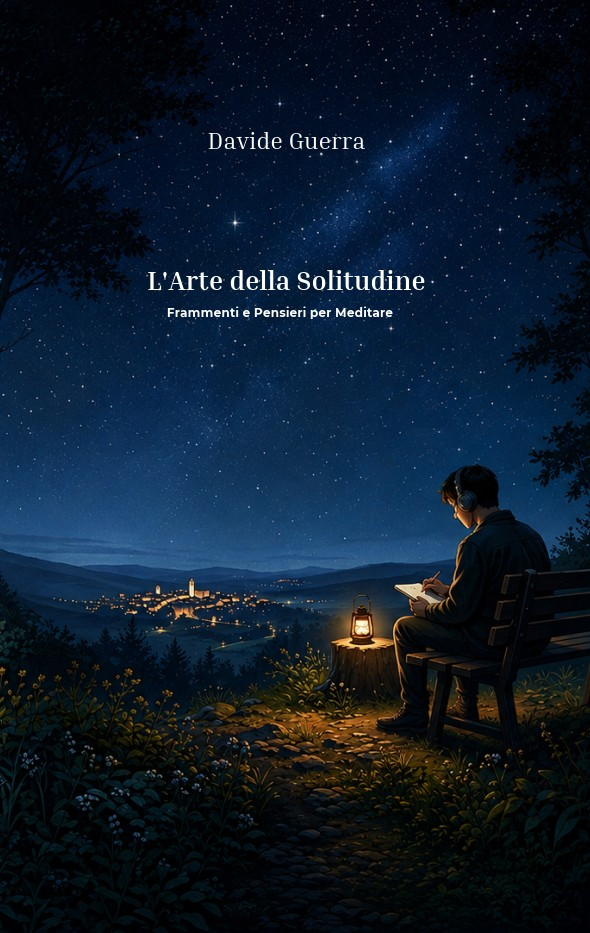

Pubblicato · Riflessioni guidate
L'Arte della
Solitudine
Frammenti e pensieri per meditare
Un libro nato da appunti personali, poi diventato un luogo più aperto. Fra domande, spazi bianchi e riflessioni, invita a fermarsi per un momento e a dare un nome a ciò che spesso rimane in sottofondo.
È una lettura da custodire, riaprire in un giorno diverso, lasciare accanto ai propri pensieri.